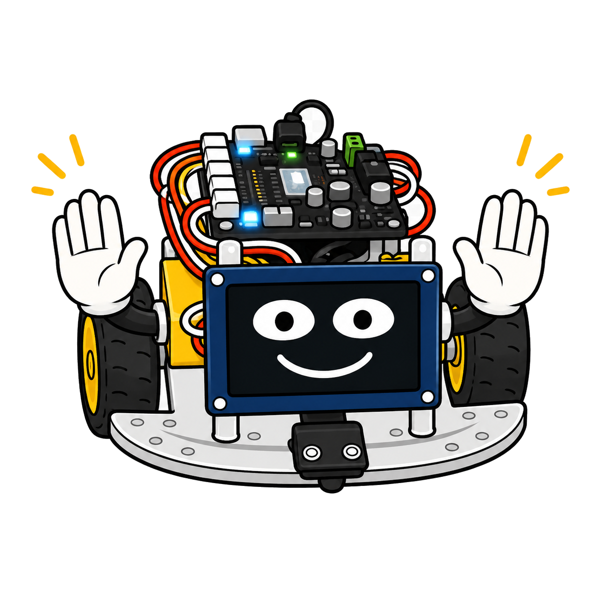

Electronics, DC Motors, and Communication Protocols
Welcome, maker — let's electrify things!
 This is the chapter where software meets hardware for real. We'll learn why motors spin, how to flip their direction, and how the microcontroller talks to every sensor and display on the robot. The electronics ideas here power everything from Chapter 7 onward.
This is the chapter where software meets hardware for real. We'll learn why motors spin, how to flip their direction, and how the microcontroller talks to every sensor and display on the robot. The electronics ideas here power everything from Chapter 7 onward.
Summary
This chapter bridges electronics theory and robot motion. Students learn how transistors enable H-bridge circuits to reverse DC motor direction, explore power management with battery packs and LiPo cells, and understand analog versus digital signals with ADC conversion. The chapter also establishes the I2C and SPI communication buses that connect the microcontroller to sensors and displays in all subsequent chapters.
Concepts Covered
This chapter covers the following 20 concepts from the learning graph:
- Transistors
- Battery Pack
- Power Management
- LiPo Battery
- Analog vs Digital Signals
- ADC Analog Digital Converter
- DC Motor Overview
- Motor Terminals
- Motor Direction Control
- Motor Forward Motion
- Motor Reverse Motion
- Motor Stop
- H-Bridge Circuit
- H-Bridge Switch States
- DPDT Switch
- Motor Driver IC
- I2C Bus
- I2C SDA SCL Pins
- I2C Frequency Config
- SPI Bus
Prerequisites
This chapter builds on concepts from:
- Chapter 1: Introduction to Computational Thinking and Physical Computing
- Chapter 2: Hardware Platform and Robot Assembly
- Chapter 4: Control Flow, Functions, and Exception Handling
Transistors — The Electronic Switch
A transistor is a tiny electronic switch. Unlike a physical light switch that you flip with your finger, a transistor is switched by electricity. A small electrical signal at one terminal controls whether a much larger current flows through the other two terminals.
Transistors are the foundation of modern electronics. The RP2040 chip inside your robot contains hundreds of millions of them. For our purposes, the most important use is simple: a GPIO pin on the microcontroller outputs a tiny signal, and that signal switches a transistor on or off. The transistor then controls a much larger current — enough to run a motor.
Without transistors, microcontrollers couldn't drive motors at all. A GPIO pin can only supply about 12 milliamps. A DC motor needs hundreds of milliamps. The transistor bridges that gap by acting as an amplifier: small signal in, large current out.
There are two main families of transistors: BJTs (bipolar junction transistors) and MOSFETs (metal-oxide-semiconductor field-effect transistors). The motor driver IC on the Cytron board uses MOSFETs internally because they are more efficient at higher currents and faster switching. You don't need to design transistor circuits yourself — the motor driver handles all of that — but knowing the principle explains why the circuit works.
Power Management
Before we discuss motors, let's understand where the power comes from.
Battery Pack
Your robot runs on a battery pack — a holder for AA or AAA batteries. AA alkaline batteries deliver about 1.5 V each. With four in series (connected end-to-end), you get 6 V total. This powers the motors and charges the onboard voltage regulator that supplies 3.3 V to the microcontroller and logic circuits.
The Cytron Maker Pi RP2040 can accept power from both the battery pack and the USB cable simultaneously. When both are connected, the board automatically selects the right source. When only the battery is connected, your robot runs fully standalone — no laptop required.
LiPo Battery
A LiPo battery (Lithium Polymer) is a rechargeable alternative to AA cells. LiPo cells deliver 3.7 V each, and a two-cell (2S) pack delivers 7.4 V — enough to power the robot for longer than AA batteries.
LiPo batteries require careful handling. Power management with LiPo cells means never discharging below about 3.0 V per cell — deep discharge damages them permanently. Many robot kits include a low-battery indicator LED for this reason. If you use a LiPo, always disconnect it when storing the robot for more than a few days.
The table below compares the two power options:
| Feature | AA Battery Pack (4×) | LiPo 2S |
|---|---|---|
| Voltage | 6.0 V (nominal) | 7.4 V (nominal) |
| Capacity | ~2000 mAh (alkaline) | 1000–2000 mAh typical |
| Rechargeable | No | Yes |
| Safety | Low risk | Must avoid overcharge/deep discharge |
| Cost | Low per use | Higher upfront, lower long-term |
Charge before class
 If your class uses LiPo batteries, charge them the night before. A fully charged battery gives you about 30–45 minutes of active robot use. Bring a charged spare if you can. Nothing ends a lab session faster than a dead battery.
If your class uses LiPo batteries, charge them the night before. A fully charged battery gives you about 30–45 minutes of active robot use. Bring a charged spare if you can. Nothing ends a lab session faster than a dead battery.
Analog vs. Digital Signals
The physical world is analog — temperature, distance, light, and pressure vary smoothly and continuously. Computers are digital — they work with discrete values, typically 0 or 1 (off or on). Understanding the difference between these two signal types is essential for reading sensors.
A digital signal has exactly two states: HIGH (3.3 V on the RP2040) or LOW (0 V). A button is digital — pressed or not pressed. An infrared sensor output is digital — detects line or does not detect line.
An analog signal can be any voltage in a range. A potentiometer (dial) is analog — it produces a smoothly varying voltage between 0 V and 3.3 V as you turn it. A light sensor, a temperature sensor, and a microphone are all analog.
The RP2040 cannot read analog voltages directly with its digital logic. It uses an ADC (Analog-to-Digital Converter) to sample the voltage and convert it to a number. The RP2040's ADC has 12-bit resolution, which means it maps the 0–3.3 V range to 0–4095. A reading of 2048 means the voltage is about 1.65 V — roughly halfway.
1 2 3 4 5 6 | |
Notice the example uses read_u16() which returns a 16-bit value (0–65535) rather than the raw 12-bit value. MicroPython scales it automatically.
Diagram: Analog vs Digital Signal Comparison
Run Analog vs Digital Signal Comparison Fullscreen
Interactive comparison of analog and digital signal waveforms
Type: MicroSim
sim-id: analog-digital-signals
Library: p5.js
Status: Specified
Create a p5.js MicroSim with a 700 × 350 canvas split into two panels side by side.
Left panel — "Analog Signal": - Shows a smooth sine wave drawn in orange. - A vertical dashed line follows the mouse X position and displays the voltage value at that point. - Label: "Voltage: X.XX V"
Right panel — "Digital Signal": - Shows a square wave (PWM-like) in blue — high and low states with sharp transitions. - Same vertical cursor showing "HIGH (3.3V)" or "LOW (0V)" at the cursor position.
Below both panels, a "Signal Type" dropdown lets the student switch the left panel between: Sine wave, Potentiometer (sawtooth ramp), Microphone (noise).
Learning objective (Bloom's Taxonomy — Understanding): students distinguish continuous analog signals from discrete digital signals and understand why ADC conversion is needed.
Responsive: redraw on window resize.
DC Motors and Direction Control
A DC motor (Direct Current motor) converts electrical energy into rotational mechanical energy. When current flows through the motor's coils, it creates a magnetic field that interacts with permanent magnets inside the motor housing, causing the shaft to spin.
Motor Terminals
A simple DC motor has two terminals — two wires or contacts where you connect power. The direction the motor spins depends on which terminal receives the positive voltage and which receives the negative (ground).
If you connect terminal A to positive (+) and terminal B to negative (−), the motor spins clockwise. Swap the connections — terminal B to positive, terminal A to negative — and the motor spins counter-clockwise. That's the key principle of DC motor direction control.
Motor Forward, Reverse, and Stop
Before the H-bridge circuit explains how we switch direction electronically, here are the three states we need:
- Forward motion — current flows through the motor in one direction. The robot's wheels spin forward.
- Reverse motion — current flows through the motor in the opposite direction. The wheels spin backward.
- Motor stop — no current flows, or both terminals are at the same voltage. The wheels stop.
We cannot simply connect the motor to a GPIO pin and reverse the connection in code — a GPIO pin only outputs a positive voltage, not a negative one. We need a special circuit called an H-bridge.
The H-Bridge Circuit
An H-bridge is an electronic circuit that can apply voltage across a motor in either direction. The name comes from the shape of the circuit — four switches arranged in a shape that resembles the letter "H", with the motor in the middle crossbar.
The four switches are transistors (usually MOSFETs). Before examining the switch states, here is the concept: by closing two specific switches and opening the other two, we route current through the motor in one direction. By switching which pair is closed, we reverse the current direction.
H-Bridge Switch States
The four switches in an H-bridge are often labeled SW1 (top-left), SW2 (bottom-right), SW3 (top-right), and SW4 (bottom-left). The motor connects between the midpoints. Let's trace three states:
| State | SW1 | SW2 | SW3 | SW4 | Motor |
|---|---|---|---|---|---|
| Forward | ON | ON | OFF | OFF | Spins CW |
| Reverse | OFF | OFF | ON | ON | Spins CCW |
| Stop (coast) | OFF | OFF | OFF | OFF | Free-spinning |
| Stop (brake) | ON | OFF | ON | OFF | Braked (locked) |
Never close SW1 and SW3 at the same time, or SW2 and SW4 at the same time. This creates a short circuit — direct path from positive to negative — that can damage or destroy the transistors. This condition is called a shoot-through or H-bridge fault. Motor driver ICs include built-in protection against this.
A DPDT Switch as an Analogy
A DPDT switch (Double Pole Double Throw) is a physical switch that achieves the same result as an H-bridge. It has two poles (two separate circuits), each of which can connect to either of two positions. Wired correctly, flipping the switch reverses the motor connections manually.
The H-bridge is an electronic DPDT switch — it does the same thing, but controlled by GPIO signals instead of a physical flip.
Diagram: H-Bridge Switch States
Run H-Bridge Switch States Fullscreen
Interactive H-bridge circuit showing switch states and current flow
Type: MicroSim
sim-id: h-bridge-simulator
Library: p5.js
Status: Specified
Create a p5.js MicroSim with a 700 × 400 canvas. Draw an H-bridge circuit schematically:
- Four switch symbols at the four corners of an "H" shape (SW1 top-left, SW2 bottom-left, SW3 top-right, SW4 bottom-right).
- A motor symbol (circle with M) in the horizontal center bar.
- Power supply (V+) at top, Ground at bottom.
- Current flow shown as animated dots moving along the wire when switches are in a valid state.
- The dot color indicates direction: orange for forward, blue for reverse.
Three buttons: "Forward", "Reverse", "Stop". Clicking each: - Updates switch states (green circle = closed, red circle = open). - Animates current flow dots in the correct direction. - Updates a text label: "Motor: FORWARD / REVERSE / STOPPED".
Hovering each switch shows a tooltip: "SW1 — top-left switch. Closed = connects motor terminal A to V+."
Learning objective (Bloom's Taxonomy — Analyzing): students trace current paths through the H-bridge to predict motor direction.
Responsive: redraw on window resize.
Motor Driver IC
Designing an H-bridge from individual transistors requires careful engineering. Instead, we use a motor driver IC (Integrated Circuit) — a pre-built chip that contains the H-bridge circuitry plus protection features. The Cytron Maker Pi RP2040 uses the MX1508 motor driver IC, which handles two DC motors simultaneously.
The motor driver exposes simple control pins: one pin per motor direction. Pulling a pin HIGH or LOW with the microcontroller's GPIO controls the transistors inside the IC. The motor driver handles the shoot-through protection internally — you can't accidentally short it through normal MicroPython code.
Never stall a motor at full power

A stalled motor — one that is mechanically blocked from spinning but still receiving full voltage — draws very high current and heats up rapidly. Extended stalling can overheat the motor driver IC or the motor windings. If your robot hits a wall and can't move, it should stop trying within a few seconds. Always include a timeout or distance check in your motor loops.I2C Bus — A Two-Wire Network
The I2C bus (Inter-Integrated Circuit, pronounced "I-squared-C") is a communication protocol that lets a microcontroller talk to multiple sensors and devices using just two wires. It is the primary bus for sensors and displays on this robot.
Two wires carry all communication:
- SDA (Serial Data) — carries data bits in both directions.
- SCL (Serial Clock) — carries a clock signal that synchronizes data transfer.
The clock signal is what makes I2C synchronous — both devices agree on when each bit starts and ends by following the same clock. This makes I2C more reliable than asynchronous protocols, at the cost of needing a dedicated clock line.
I2C Addresses
Every I2C device has a unique 7-bit address (from 0 to 127). When the microcontroller wants to talk to the distance sensor, it broadcasts the sensor's address on the SDA line. Only the device with that address responds. All other devices on the bus stay quiet.
This is how you can connect multiple I2C devices to the same two pins. The VL53L0X distance sensor uses address 0x29 (hexadecimal). The SSD1306 OLED display typically uses 0x3C or 0x3D. As long as addresses don't conflict, many devices share the bus.
I2C SDA and SCL Pins
On the Cytron Maker Pi RP2040, the I2C bus uses GPIO pins 16 (SDA) and 17 (SCL). These are defined in config.py:
1 2 | |
In MicroPython, you create an I2C object like this. Before the code, here is what the parameters mean: 0 selects I2C bus 0 (the RP2040 has two), scl specifies the clock pin, sda specifies the data pin, and freq sets the communication speed in Hz.
1 2 3 4 5 6 | |
I2C Frequency Config
I2C frequency is how fast bits travel on the bus. Standard mode is 100 kHz (100,000 bits per second). Fast mode is 400 kHz. The VL53L0X sensor works well at 400 kHz. If you use 400 kHz and get communication errors, try dropping to 100 kHz — some devices don't support Fast mode.
To scan all devices connected to the bus and print their addresses:
1 2 | |
This should print something like ['0x29', '0x3c'] if both the distance sensor and the OLED display are connected.
SPI Bus — High-Speed Serial
The SPI bus (Serial Peripheral Interface) is a second communication protocol for fast, short-distance connections. SPI uses four wires instead of I2C's two:
- MOSI — Master Out Slave In (data from microcontroller to device)
- MISO — Master In Slave Out (data from device to microcontroller)
- SCK — Serial Clock
- CS — Chip Select (one per device — selects which device is active)
The table below compares I2C and SPI. Understanding this comparison helps you choose the right bus for a given sensor.
Before the table, here is the key difference: I2C is slower but uses only 2 wires and supports many devices easily. SPI is faster but uses more wires and requires a separate CS pin per device.
| Feature | I2C | SPI |
|---|---|---|
| Wires | 2 (SDA, SCL) | 4 (MOSI, MISO, SCK, CS) |
| Speed | 100–400 kHz (standard) | 1–10+ MHz |
| Device addressing | Address on the bus | Chip Select pin per device |
| Robot use cases | Distance sensor, OLED display | Some displays, SD cards |
In this course, we primarily use I2C. The OLED display supports both I2C and SPI modes — we use I2C mode because it requires fewer wires. You will see SPI referenced in data sheets and libraries, so knowing what it is prevents confusion.
I2C or SPI — why does it matter?
 Think of I2C as a shared party phone line — many devices share the same two wires, each waiting its turn. SPI is like private phone lines — faster, but you need a separate line (CS pin) for each device. For this robot with a handful of sensors, I2C's simplicity wins. For a high-speed display update or SD card access, SPI's speed wins.
Think of I2C as a shared party phone line — many devices share the same two wires, each waiting its turn. SPI is like private phone lines — faster, but you need a separate line (CS pin) for each device. For this robot with a handful of sensors, I2C's simplicity wins. For a high-speed display update or SD card access, SPI's speed wins.
Key Takeaways
- Transistors act as electronic switches — a small GPIO signal controls large motor current
- Battery packs provide 6 V for motors; LiPo batteries provide 7.4 V with longer life
- Analog signals vary continuously; digital signals are HIGH or LOW
- The ADC converts analog voltages to numbers (0–65535 in MicroPython)
- A DC motor spins in the direction determined by which terminal gets positive voltage
- An H-bridge uses four transistor switches to reverse motor direction electronically
- The motor driver IC (MX1508) contains the H-bridge and shoot-through protection
- I2C uses two wires (SDA, SCL) with device addressing — 400 kHz Fast mode for this course
- SPI uses four wires and is faster than I2C — used for some displays and SD cards
You understand the electronics that make robots move!
 Double thumbs-up, engineer! Transistors, H-bridges, I2C, SPI — this is the layer between code and physical motion. Understanding it puts you ahead of most hobbyist programmers who just copy code without knowing why it works. Next chapter, we put all of this to use with PWM motor control — and make me actually roll!
Double thumbs-up, engineer! Transistors, H-bridges, I2C, SPI — this is the layer between code and physical motion. Understanding it puts you ahead of most hobbyist programmers who just copy code without knowing why it works. Next chapter, we put all of this to use with PWM motor control — and make me actually roll!